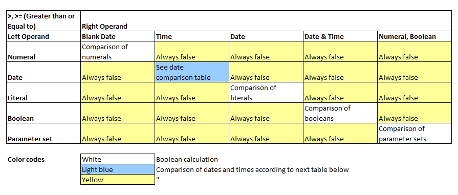
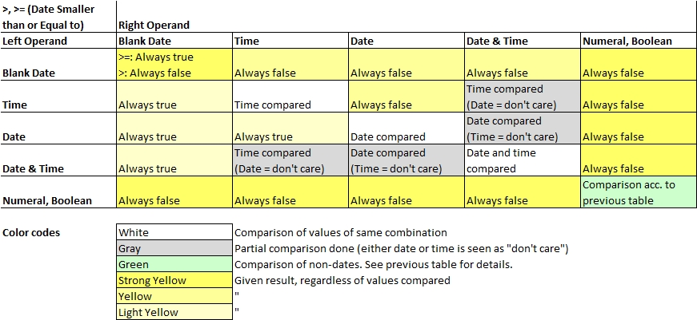

Introduction
Basic rules to greater than / greater than or equal to comparisons:
- Contents are compared strictly, i.e. data type and contents must match perfectly. No wildcards are supported here.
- Comparing values of different types, e.g. numerals with strings, will always return false.
- When comparing parameter sets, the sorting order of the parameter is compared.

1 When comparing parameter sets, the following sorting order across different data types applies: parameter set > string > date > numeral > boolean,
then followed by contents if types are equal. For sets with common contents and different lengths,
the longer one is considered as the "greater" one. Nested sets will also be compared.
echo("Basic comparisons:");
a[0] = 3 > 3; // false
a[1] = 3 >= 3; // true
a[2] = 4.9 > 5; // false
a[3] = Ha > He; // false (sorting order)
a[4] = {1,2,3} > {3,2,1}; // false
a[5] = {1,2,3} > {1,2,3}; // false
a[6] = {1,2,3} >= {1,2,3}; // true
a[7] = {1,2,3} > {1,2,3,4}; // false
a[8] = false > true; // false
a[9] = a > 1; // always false
for all variables( a[], x[] ) echo( x[] );Basic comparisons:
false
true
false
false
false
false
true
false
false
false
Comparing Dates
Note that value of type date may assume 4 states: date only, time only, date and time combined and blank date (no value). Even for the same operator,
the rules of calculating dates and numeric operands differ.

dt1[] = date('2020-07-14 12:30:00');
dt2[] = date('2020-08-01 06:45:00');
d1 [] = date('2020-07-14');
d2 [] = date('2020-08-01');
t1 [] = date('12:30:00');
t2 [] = date('06:45:00');
a[0] = dt1[] > dt2[]; // false
a[1] = dt1[] > t2 []; // Times compared, true
a[2] = dt2[] > d1 []; // Dates compared, true
a[3] = dt2[] > t2 []; // Times compared, false
a[4] = dt2[] >=t2 []; // Times compared, true
a[5] = dt1[] > d1 []; // Dates compared, false
a[6] = dt1[] >=d1 []; // dates compared, true
a[7] = dt1[] > dt1[]; // false
a[8] = dt1[] >=dt1[]; // true
for all variables( a[], b[] ) echo( b[] );false
true
true
false
true
false
true
false
true